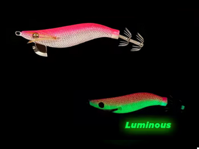

Pescar Barato
Inicio
Señuelos
YAMASHITA
DTD
YO-ZURI
LETOYO
KINGDOM
SQUID KING
OTROS
Componentes
Color Egis
Acerca de

🎨 Características
Color base:
Parte superior rosa fuerte degradando hacia un vientre blanco perlado.
Ojos:
Oscuros con reflejos metálicos.
Brillo:
Luminiscencia verde intensa, que resalta en todo el cuerpo
Acabado:
Cuerpo recubierto de tela sintética que mejora la fricción y estabilidad en el agua.
🌤️ Condiciones ideales de uso
☁️
Días nublados:
La parte luminiscente verde aporta visibilidad adicional, manteniendo eficacia en baja luz.
🌊
Aguas azules o verdosas:
El contraste del rosa sobre blanco se nota a distancia, ideal para atraer desde zonas profundas o con fondo oscuro.
🌅
Atardecer o amanecer:
Su equilibrio entre colores vivos y luminosidad lo hace muy versátil.
🌙
Noche:
El brillo verde se vuelve su principal atractivo, útil en aguas poco transparentes o con sedimentos.
🧠 Comportamiento esperado
👉 Egi de alta visibilidad, diseñado para estimular ataques agresivos cuando los calamares están activos.
👉 Su doble contraste (rosa + blanco/luz verde) produce un efecto muy notorio al desplazarse, ideal para despertar reacción instintiva.
👉 Puede resultar demasiado llamativo cuando los calamares están pasivos, por lo que conviene alternarlo con tonos naturales en esas circunstancias.
👉 Muy útil en zonas abiertas o con corriente, donde el movimiento del señuelo necesita reforzarse visualmente.
⚙️ Resumen práctico
Condición
Eficiencia
☀️🌊 Día soleado / agua clara
🟢 Alta
☁️💙 Día nublado / aguas azules
🟢🟢 Muy alta
🌙🌑 Noche / aguas oscuras
🟢 Alta
🦑😴 Calamares pasivos
🟡 Media
🦑🔥 Calamares agresivos
🔥 Excelente
🛒 Comprar opción 1